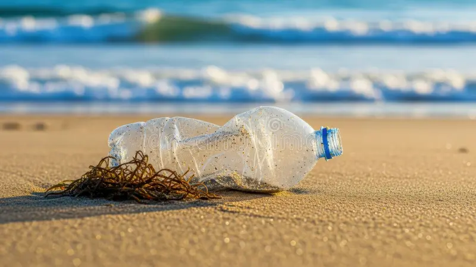
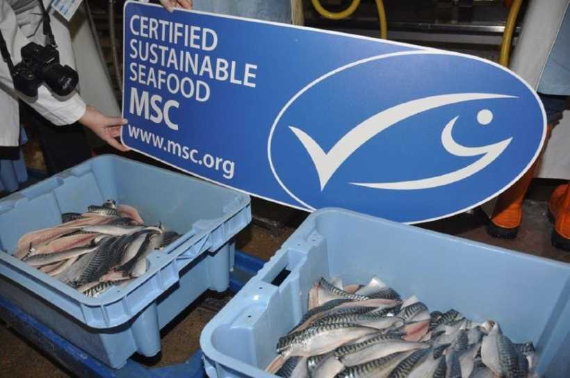
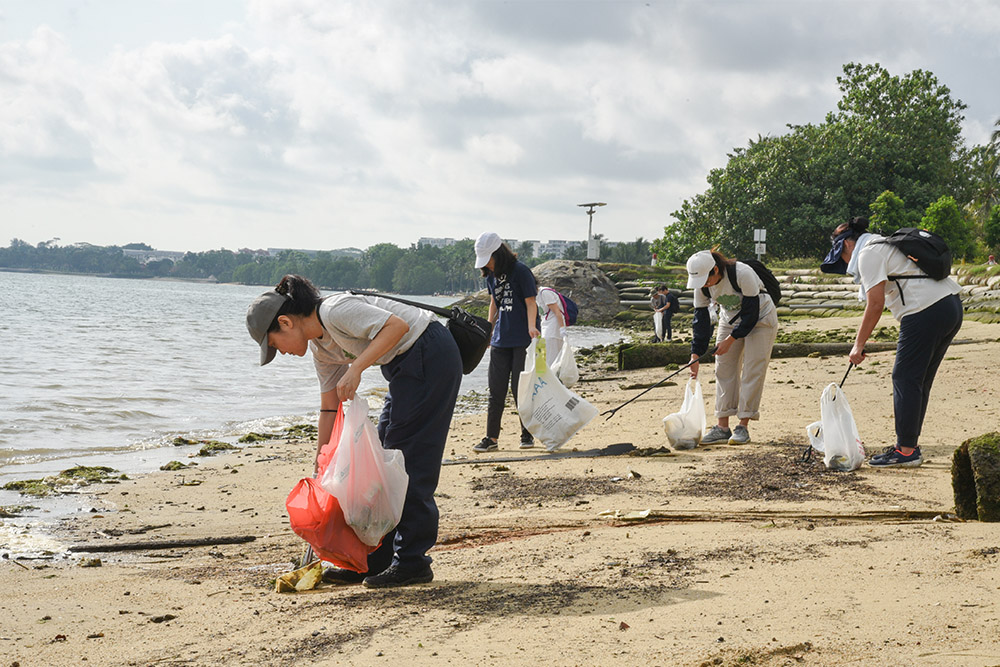
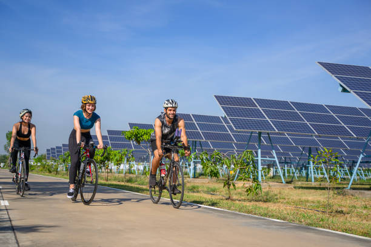
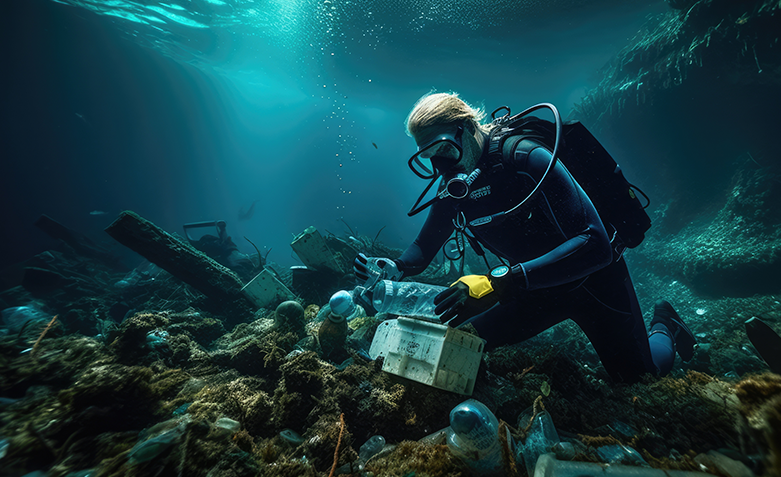
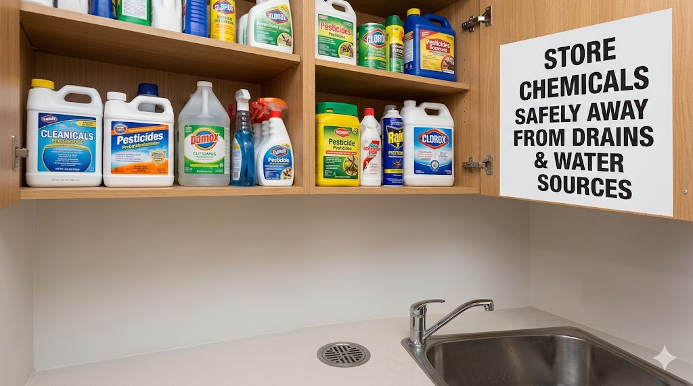
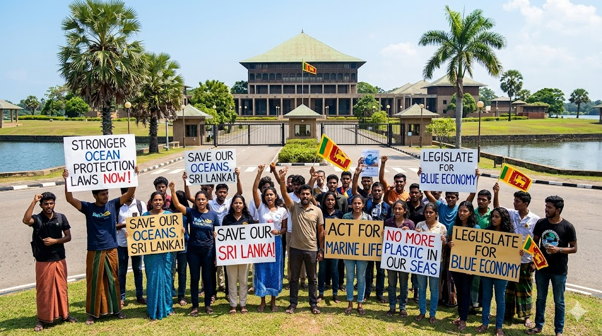

Ditch Single-Use Plastic
Swap plastic bags, bottles, and straws for reusable alternatives. Every item refused is one less piece that could reach the ocean.
⚡ 3 Impact PointsSelect the actions you already take -or are willing to take -to protect our oceans. Discover how your choices combine to create a meaningful impact for Life Below Water.

Swap plastic bags, bottles, and straws for reusable alternatives. Every item refused is one less piece that could reach the ocean.
⚡ 3 Impact Points
Look for MSC-certified labels when buying fish or seafood. Supporting sustainable fisheries reduces pressure on overexploited stocks.
⚡ 4 Impact Points
Participate in a local or organised beach or coastal clean-up. Removing waste before it enters the ocean protects marine wildlife directly.
⚡ 5 Impact Points
Walk, cycle, or use public transport. Lower CO₂ emissions slow ocean acidification and sea level rise that threaten marine ecosystems.
⚡ 2 Impact Points
Donate to or share the work of organisations like Ocean Conservancy or WWF Oceans. Funding and awareness amplify conservation impact.
⚡ 3 Impact Points
Share verified facts about ocean health in your school, social media, or community. Informed communities drive policy change and collective action.
⚡ 4 Impact Points
Dispose of chemicals, medicines, and oils responsibly. Never pour them down the drain -they travel through waterways into the ocean.
⚡ 3 Impact Points
Write to your local representative, sign petitions, or vote for candidates who support marine protection. Policy change has the largest systemic impact.
⚡ 5 Impact PointsYour selected actions: 0
Start selecting actions above
Every action, no matter how small, contributes to a healthier ocean.